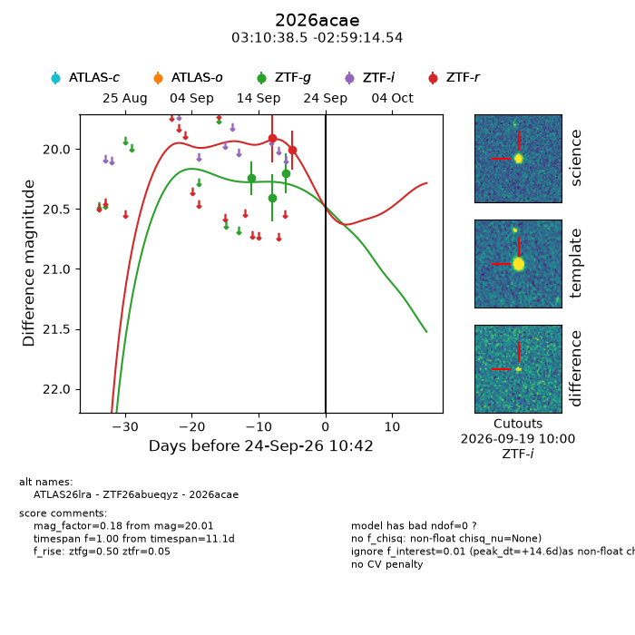
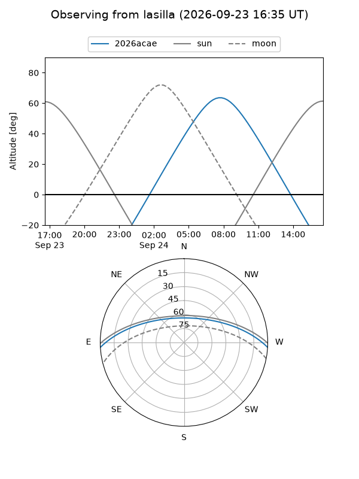
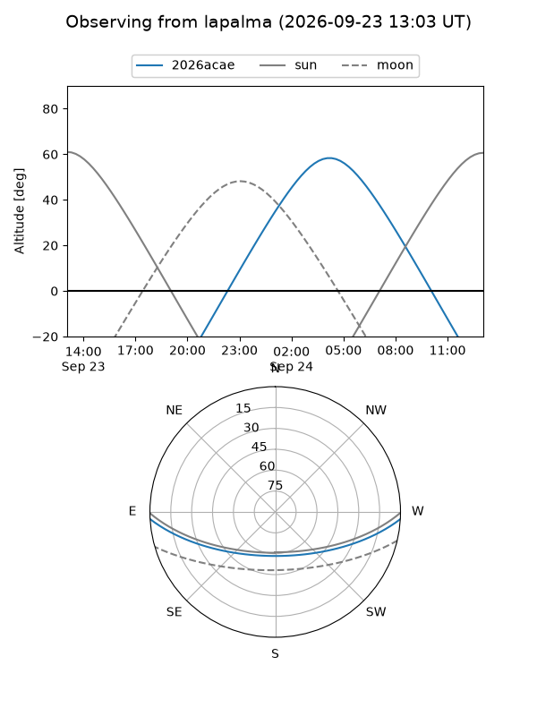
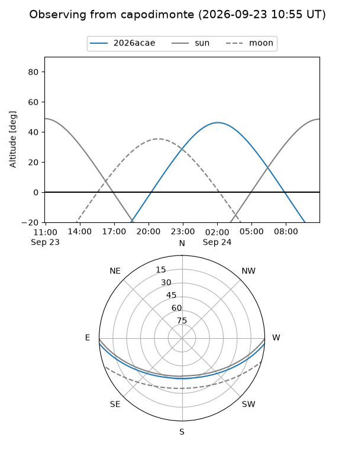
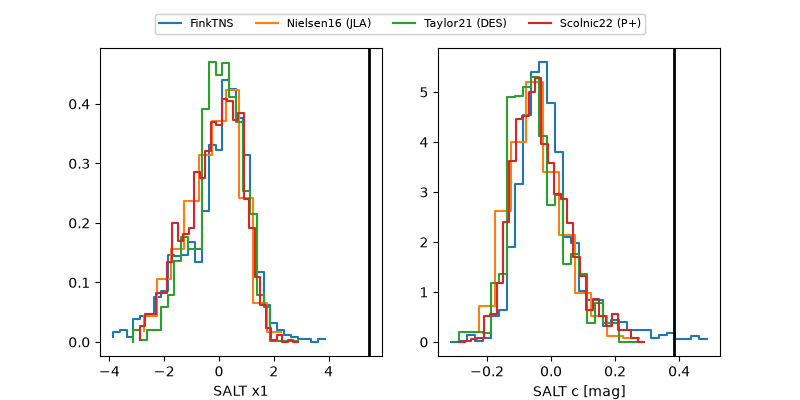

2026acae
Target 2026acae at 2026-09-24 10:44
Aliases and brokers:
FINK-ZTF: ztf.fink-portal.org/ZTF26abueqyz
Lasair-ZTF: lasair-ztf.lsst.ac.uk/objects/ZTF26abueqyz
ALeRCE-ZTF: alerce.online/object/ZTF26abueqyz
YSE-PZ: ziggy.ucolick.org/yse/transient_detail/2026acae
TNS name: wis-tns.org/object/2026acae
Direct TNS query: direct search
alt names
ZTF26abueqyz (ztf,fink_ztf)
2026acae (tns,yse)
ATLAS26lra (atlas)
Coordinates:
equatorial (ra, dec) = 47.6604,-2.98737
equatorial (HMS+DMS) = 03:10:38.50,-02:59:14.54
galactic (l, b) = (183.0471,-48.90106)
Flags:
TNS type: nan
peak dt: +14.6
Photometry:
last ztfg=20.20, ztfr=20.01
3 ztfg, 2 ztfr detections
Lightcurve

Visibility



Additional plots
